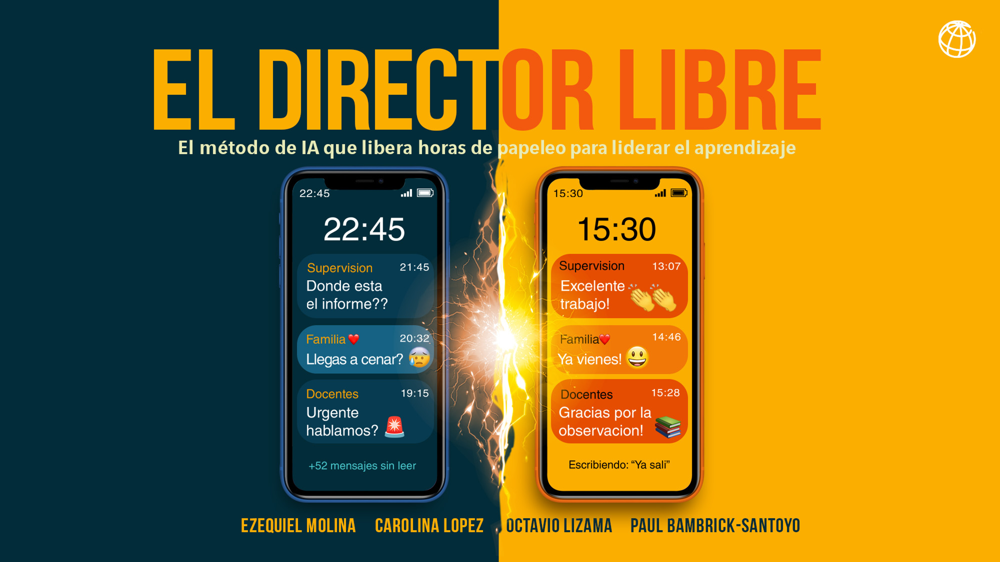

El Director LIBRE
El método de IA que libera horas de papeleo a los directores escolares y las devuelve al liderazgo pedagógico. Un libro gratuito del Banco Mundial, una comunidad regional que comparte lo que aprende, y tres herramientas de IA listas para usar hoy mismo.

Cinco pasos. Un objetivo: recuperar tiempo pedagógico.
LIBRE es un acrónimo. Cada letra es un paso concreto — no un concepto abstracto. Cada paso incluye herramientas específicas, prompts probados y casos reales. El método está pensado para directores y subdirectores que manejan WhatsApp: si podés hacer eso, podés hacer todo lo demás.
LOCALIZA tus fugas de tiempo y sus causas
No solo DÓNDE, sino POR QUÉ pierdes tiempo.
IMPLEMENTA soluciones éticas con IA
Si manejas WhatsApp, puedes hacer esto.
BUSCA impacto real
Mide el aprendizaje y tu vida, no solo eficiencia.
REFUERZA éxitos y aprende de fracasos
Convierte rutinas en sistemas automáticos.
EXPANDE de forma inteligente
Muestra, no prediques.
Compartimos lo que estamos aprendiendo.
El Director LIBRE es un libro y también una comunidad regional. Directores, subdirectores, formadores y equipos ministeriales de toda América Latina prueban el método, comparten los prompts que funcionan, y refinan los casos entre todos. Lo que aparece en el libro es lo que se validó primero en el terreno — no al revés.
Compartir lo que estamos aprendiendo sobre el uso de la IA para directores escolares en América Latina.
Tres formas de trabajar con el método hoy mismo.
Todas gratuitas, todas públicas. Un GPT dedicado en ChatGPT, un notebook precargado en NotebookLM, y un catálogo abierto de prompts donde cada persona sube, descubre y califica lo que a otros les funcionó.
El GPT del Director LIBRE
Un GPT que aplica el método LIBRE a tu caso. Contale qué te consume tiempo y te devuelve un plan concreto — no una lista genérica.
Abrir en ChatGPTEl libro cargado en NotebookLM
Explorá el libro completo con preguntas en lenguaje natural. Ideal para directores que quieren ir a la pregunta que tienen ahora sin leer 300 páginas primero.
Abrir en NotebookLMCatálogo abierto de prompts
Descubrí, compartí y calificá prompts que ya usaron otros directores. Un banco creciente construido por la propia comunidad.
Explorar el catálogoDescargalo gratis.

El Director LIBRE: el método de IA que libera horas de papeleo para liderar el aprendizaje.
Una guía práctica del Banco Mundial. Publicada en 2025. En español, con casos reales de directores escolares en América Latina y prompts listos para copiar y pegar.
Descargar el PDFTodo el material en un solo lugar.
El Director LIBRE en el Banco Mundial
La página oficial del programa en el Banco Mundial: contexto, materiales complementarios y cobertura regional.
Ver la página oficialDescargá el libro
El PDF completo del libro. Publicación del Banco Mundial, distribución libre.
Descargar el PDF